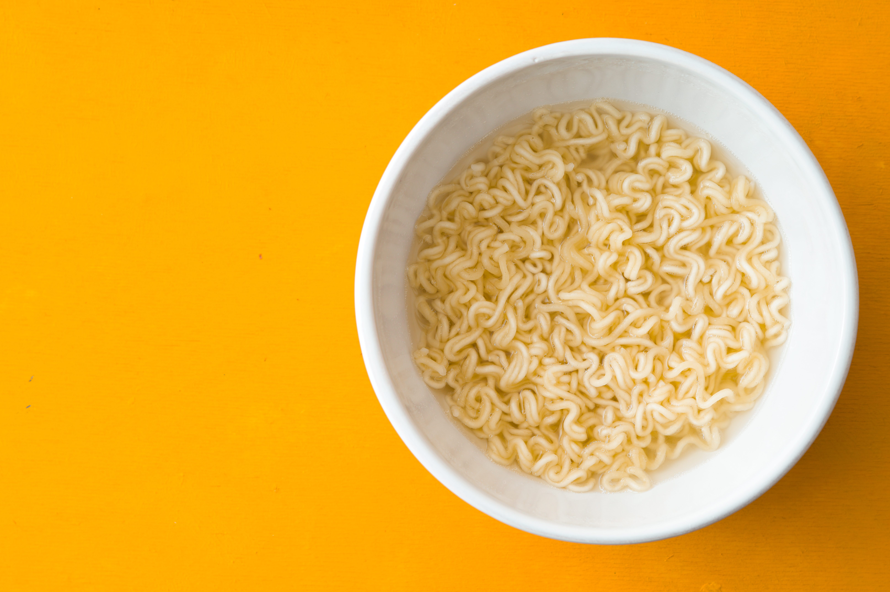

Ramen Recipe

Description
Also known as the poor university student meal, ive eaten alot of these in my time on this earth.
Ingredients
- Mr Noodles Instant Ramen
- Water
Steps
- Place Mr Noodles Pack Straight into bowl and boil your water
- Once water is boiled, pour into bowl and use fork the push noodles in/break up noodles.
- Let noodles sit for a few minutes before emptying the water into the sink